MANUAL SPECIMEN REVIEW · 4 NOVEMBER 2026 · VERSION 0.6.72
Closer to the photographed organism.
Three existing fungal entries now use licensed Sketchfab photographic reconstructions: the morel’s pitted cap, turkey-tail brackets on deadwood, and lobed yellow Laetiporus growth on bark. The archive still contains 341 records.
338 other records and all taxon, photograph and occurrence identities are retained. The source body texture bytes and full triangle topology are preserved; only display normalization, material response and bounded attribute quantization change, with the morel calibration cube removed.
These are photographed specimen exteriors, not independently validated physiology. Archived maps are 1024 pixels each; very deep zoom reveals finite image resolution and scan artefacts. Source identifications are supplied by their creators and are not molecularly verified. No accuracy percentage is assigned.
Yellow morel · Turkey tail · Chicken of the woods · Movement scope
EXISTING RECORD · PHOTOGRAPHIC EXTERIOR
Yellow morel
Morchella esculenta
A photographic morel exterior retains its irregular pits, ridges and curved stipe. Fertile hymenium lines the pits; external appearance alone does not settle species in the esculenta complex.
Inspect and zoom in the archive ↗ Download static GLB · 23.7 MB
Source: ffish.asia / floraZia.com · CC0 · 760,928 triangles · 2 original photographic/PBR maps, 1024 × 1024 each.

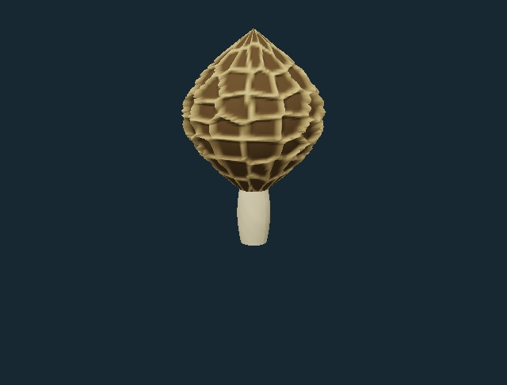


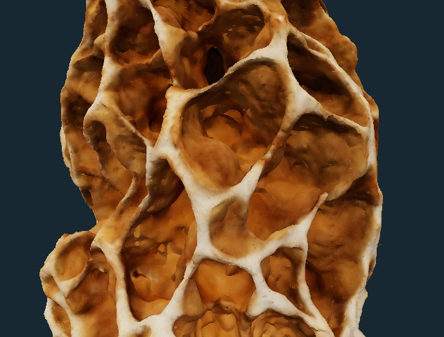

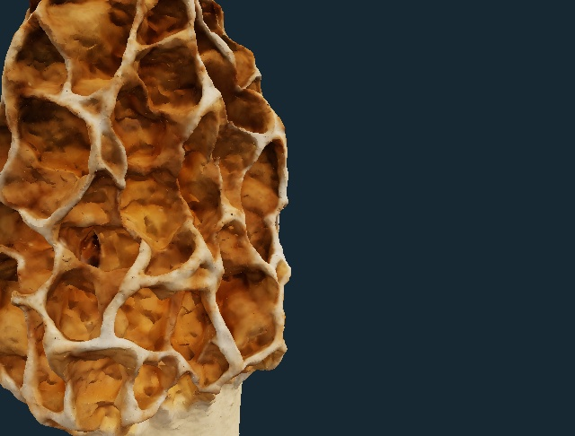

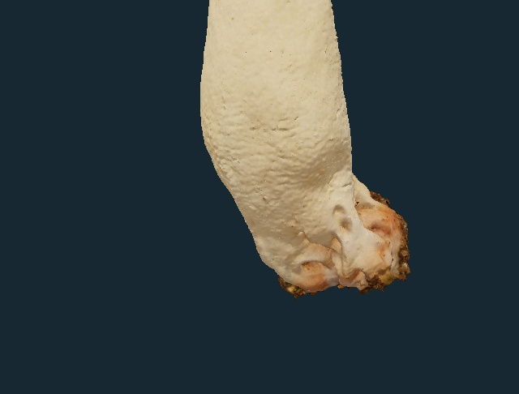

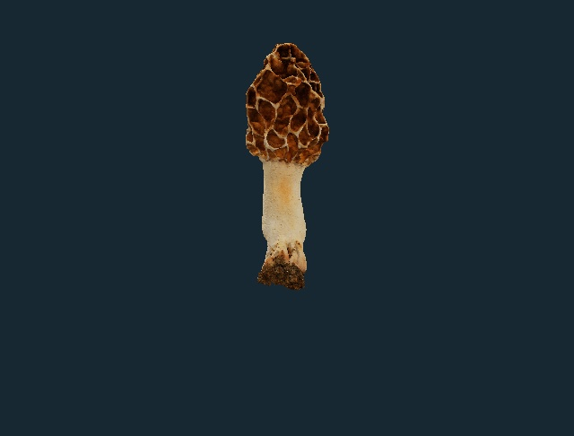

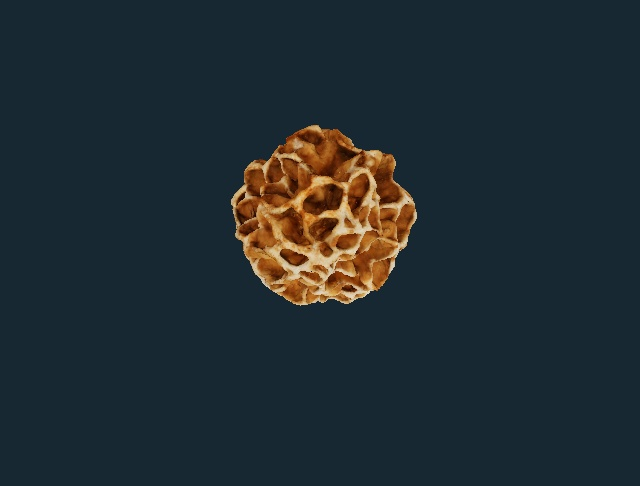

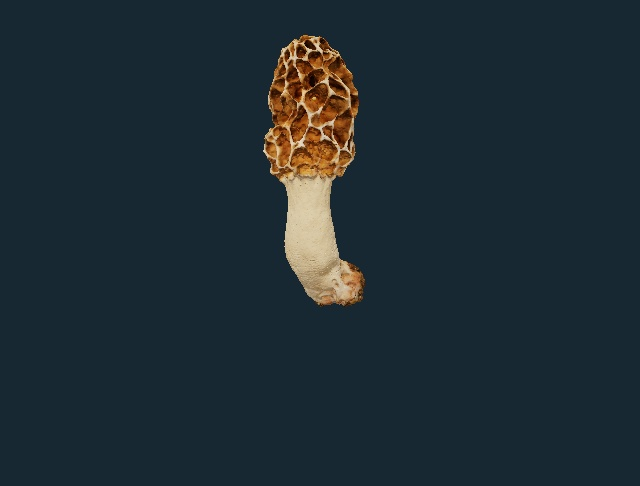
Removed the separate 12-triangle calibration cube and its unused calibration image. Uniform display normalization, nonmetallic material response and bounded 16-bit attribute quantization; no triangle simplification. Original body image bytes and triangle topology retained.
Captured anatomy and limits
- Pitted fertile cap — The scan retains the individual pitted cap. In morels, the hymenium in the pits contains spore-producing asci; those microscopic cells are not reconstructed here. The selected anatomical marker is a macro-region, not an identified ascus.
- Sterile ridges — Captured irregular ridges separate the fertile pits. Their shape and photographed wear belong to this specimen; they are not a universal diagnostic pattern or a reconstructed internal tissue network.
- Stipe exterior — The captured stalk retains its curvature and surface marks. The characteristic hollow interior of a morel is not exposed by this exterior scan. No mycelium, soil exchange or ontogenetic sequence is supplied.
Creator-identified morel; the esculenta complex is not resolved by external appearance. The source calibration cube is removed. No molecular identification, sliced interior or living mycelium is supplied. Display size and optical response are not physically calibrated. Growth, spore discharge/transport and decomposition are not simulated.
Retained independent reference photograph
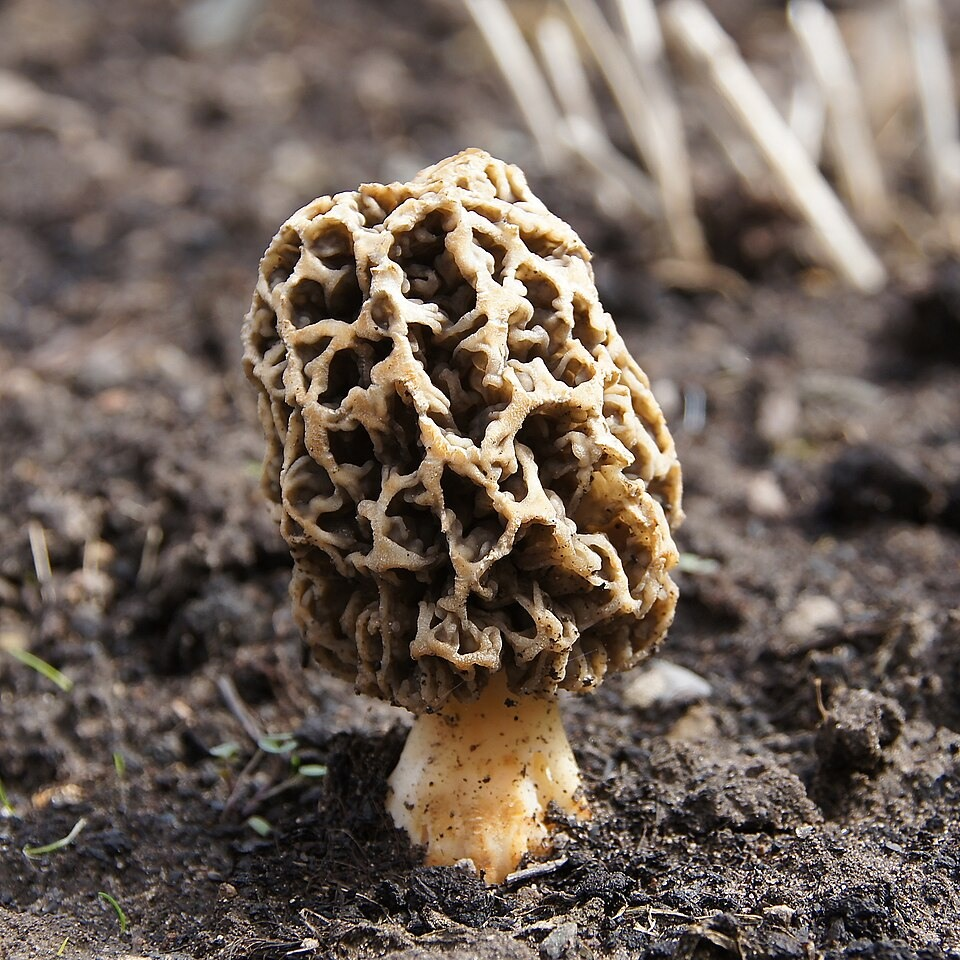
Source and scientific reading
- Kuo et al. 2012 · Taxonomic revision of true morels — Primary taxonomy, macromorphology and molecular-species limits; comparative genus context, not identification of the scanned Japanese specimen.
- Sierra College · Morchella cap and asci photomicrograph — Institutional microscopy supports asci in the fertile cap; no microscopic structures are reconstructed in this scan.
- CC0 アミガサタケ · Common Morel, Morchella esculenta · ffish.asia / floraZia.com — Licensed creator source with archived photographic image payloads and documented display/material changes. Creator-identified morel; the esculenta complex is not resolved by external appearance. The source calibration cube is removed. No molecular identification, sliced interior or living mycelium is supplied.
EXISTING RECORD · PHOTOGRAPHIC EXTERIOR
Turkey tail
Trametes versicolor
A photographic colony on deadwood replaces generic painted brackets. Concentric cap zones, overlapping margins and the captured woodland context are retained; microscopic pores and decomposition physiology remain unresolved.
Inspect and zoom in the archive ↗ Download static GLB · 20.3 MB
Source: noe-3d.at · CC BY-NC 4.0 · 760,778 triangles · 1 original photographic/PBR maps, 1024 × 1024 each.

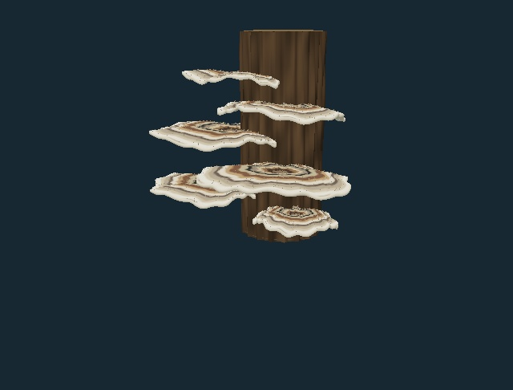

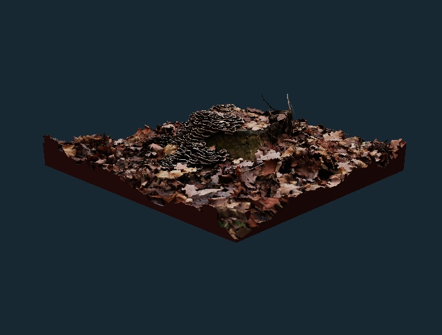

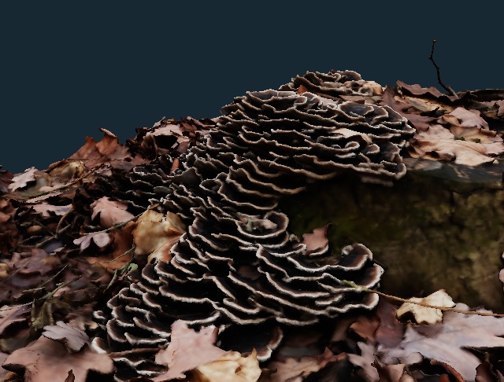

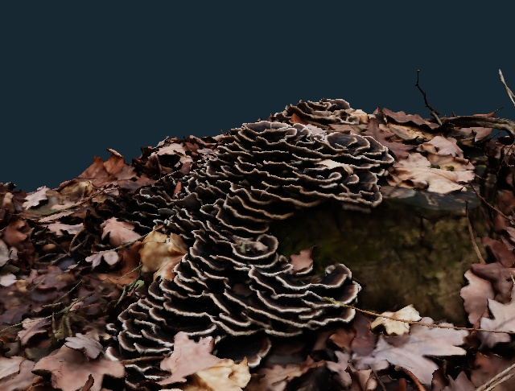

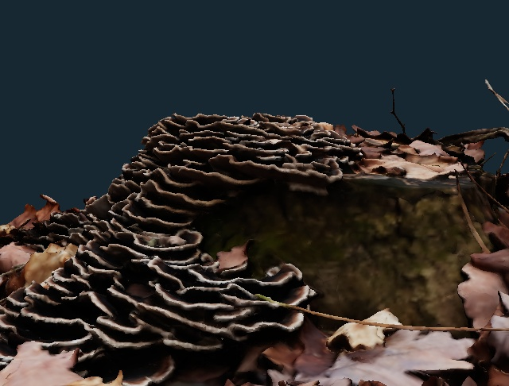

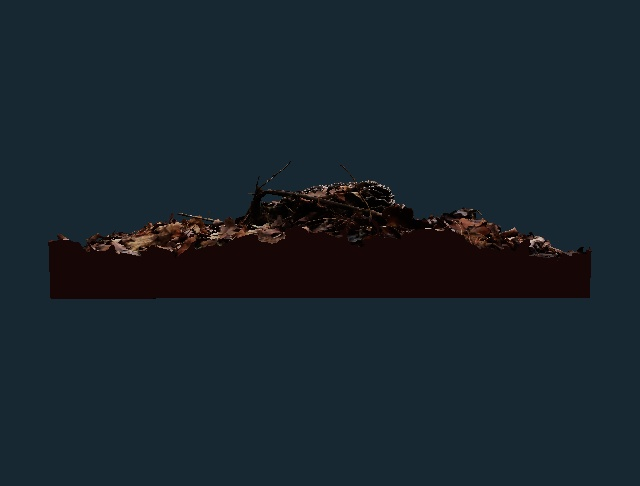

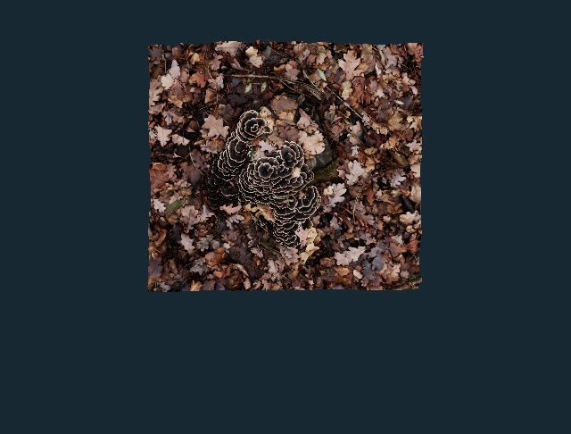

Captured bark, stump and leaf context are retained where present. Uniform display normalization, nonmetallic material response and bounded 16-bit attribute quantization; no triangle simplification. Original body image bytes and triangle topology retained.
Captured anatomy and limits
- Attached brackets — Retained thin overlapping caps occur on the captured stump and leaf-litter context from Sierndorf. The source represents one colony and season, with creator-provided species identification.
- Cap zones and surface — The actual photographic banding, weathering and fine surface relief are retained on dense source triangles. Their position and colour vary between fruit bodies; the archived maps are 1024 pixels each.
- Lower margin · pore context — The marker selects a captured bracket margin. Its tiny pores are not resolved, so the view does not identify an individual fertile pore. Trametes produces basidiospores on basidia lining tubes that open as small lower-surface pores. The scan supports an external-region study; individual pores, basidia, spore discharge and white-rot chemistry are not measured or solved.
Photographic reconstruction of the creator-identified colony on a stump in Sierndorf. Captured deadwood and leaf-litter context is retained. Individual microscopic pores, basidia and white-rot chemistry are not resolved. Display size and optical response are not physically calibrated. Growth, spore discharge/transport and decomposition are not simulated.
Retained independent reference photograph
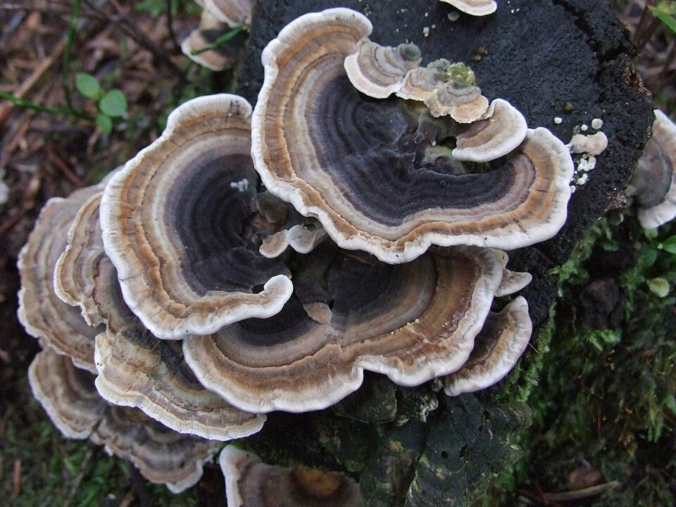
Source and scientific reading
- NC State · Larry F. Grand Mycological Herbarium: Trametes versicolor — Primary institutional morphology and wood-decay account; contrasting cap zones, lower pores and white rot.
- Stolze-Rybczynski et al. 2009 · Adaptation of the spore discharge mechanism in Basidiomycota — Comparative primary discharge research. A macro-surface marker does not simulate Buller-drop ejection or transport.
- Schmetterlings-Tramete · Trametes versicolor · noe-3d.at — Licensed creator source with archived photographic image payloads and documented display/material changes. Photographic reconstruction of the creator-identified colony on a stump in Sierndorf. Captured deadwood and leaf-litter context is retained. Individual microscopic pores, basidia and white-rot chemistry are not resolved.
EXISTING RECORD · PHOTOGRAPHIC EXTERIOR
Chicken of the woods
Laetiporus sulphureus
A photographed field specimen retains lobed sulphur-yellow fruiting growth and bark attachment. Source age, host and molecular identity are unverified; related Laetiporus species can have similar external appearances.
Inspect and zoom in the archive ↗ Download static GLB · 3.1 MB
Source: Nik · CC BY 4.0 · 49,999 triangles · 3 original photographic/PBR maps, 1024 × 1024 each.

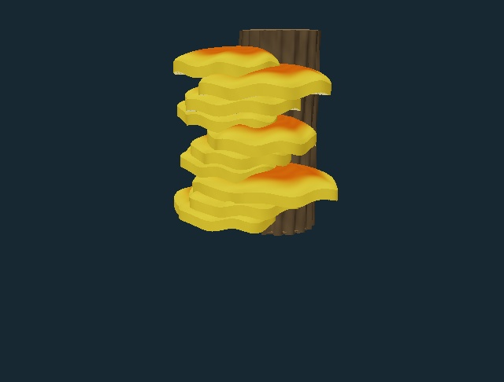


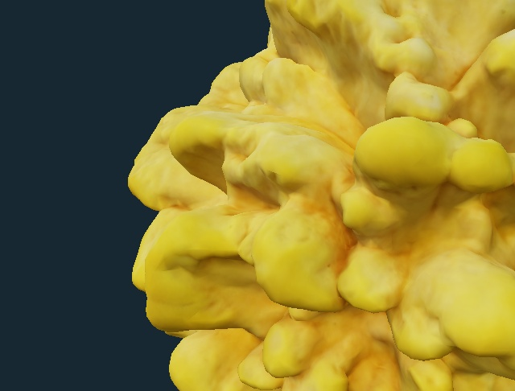

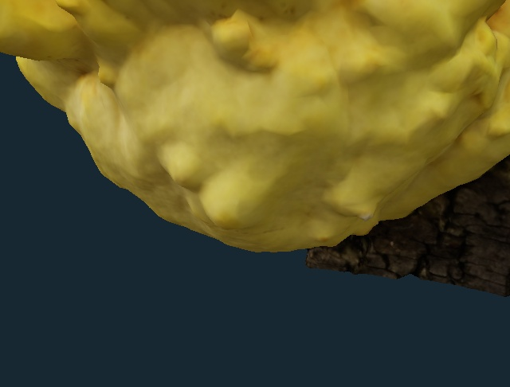

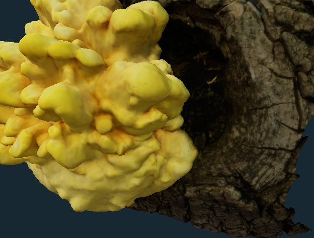

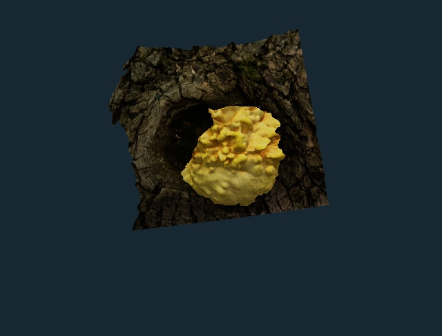

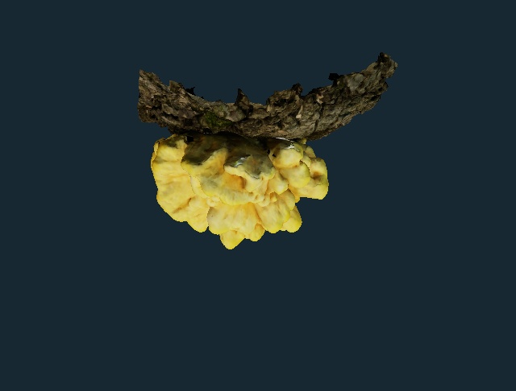

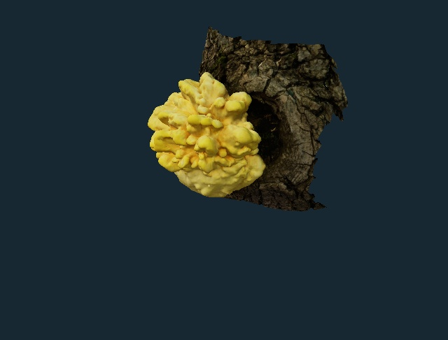
Captured bark, stump and leaf context are retained where present. Uniform display normalization, nonmetallic material response and bounded 16-bit attribute quantization; no triangle simplification. Original body image bytes and triangle topology retained.
Captured anatomy and limits
- Lobed yellow fruiting growth — The source photographs retain the particular fleshy lobes and yellow surface of this field specimen. It is not recoloured into a universal mature orange form; developmental age is not calibrated.
- Lower lobe · pore context — The marker selects the captured lower lobe, not an identified mature pore surface. Laetiporus is a polypore: basidia line lower-surface tubes rather than gills. This is a selected macro-region on the exterior, not reconstructed tubes or microscopic spore-producing cells.
- Bark and attachment — Captured bark and the attached fruiting body remain together. Laetiporus species cause brown rot, but hyphae within the host, enzyme action, wood decay and water exchange are not represented by the exterior scan.
Creator-identified young yellow fruiting growth on bark, photographed in a city park with a Sony RX-100mkIV and processed in Agisoft Metashape. Host, collection region and molecular identification are not provided; regional lookalikes remain relevant. Display size and optical response are not physically calibrated. Growth, spore discharge/transport and decomposition are not simulated.
Retained independent reference photograph
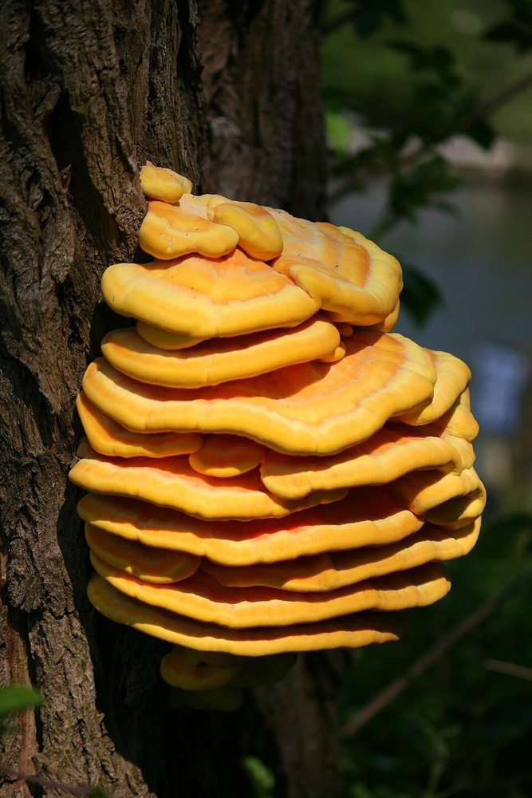
Source and scientific reading
- Lindner and Banik 2008 · Molecular phylogeny of Laetiporus — Primary research on the sulphureus complex, regional species and pore-surface differences; no molecular assignment of the source field specimen.
- Stolze-Rybczynski et al. 2009 · Adaptation of the spore discharge mechanism in Basidiomycota — Comparative primary discharge research. A macro-surface marker does not simulate Buller-drop ejection or transport.
- Laetiporus sulphureus · Nik — Licensed creator source with archived photographic image payloads and documented display/material changes. Creator-identified young yellow fruiting growth on bark, photographed in a city park with a Sony RX-100mkIV and processed in Agisoft Metashape. Host, collection region and molecular identification are not provided; regional lookalikes remain relevant.
Stationary fruit bodies; explicit teaching markers.
The photographed bodies remain fixed during inspection. A study button fades in an enlarged locator on an anatomical region and settles by four display seconds. Its size and timing are teaching conventions. It is not a spore, an actual fertile cell, a growth stage, or a physiological clock.
Growth, decomposition and spore ejection or transport are unavailable. Morels produce ascospores in asci; turkey tail and Laetiporus are basidiomycetes with fertile lower tubes. Exterior scans do not resolve those cellular mechanisms. The lower-margin markers provide anatomical context where individual pores are not resolved or exposed.
Choosing an available study resumes playback after paused close-up inspection. The native downloadable GLBs contain the stationary source surfaces; website locator overlays are excluded from exports.
Review evidence and reuse
The comparison images above render the actual old and new meshes with their photographic maps in the compatibility renderer. Close-ups use the selected anatomical regions. Browser review checks the same production viewer and its zoom controls.
Source, topology and preservation proof · Khronos file conformance results · Asset hashes and grants · Review inventory · Complete attribution and changes
The turkey-tail scan and derivative renderings are CC BY-NC 4.0. The morel is CC0; the Laetiporus scan is CC BY 4.0. Each asset retains its own terms. Photographic appearance is not proof of species identity or a measurement of living tissue.